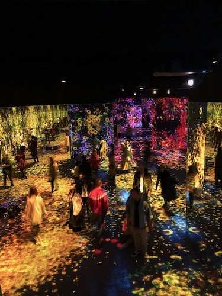

The article was a pretty interesting read; it made me think a little more harder about game design (I love games!). It does bring up a few good points and things to keep in mind while designing games. I feel like the author is mainly referencing mobile game UI/UX, as most of their examples are of mobile games, but thinking about it, the information could apply to games for other consoles as well (such as PC). However, different technologies do require different considerations because of various limitations of things like screen space, controls, etc.
I play a lot of (complex) mobile games: Arknights, Genshin, Cookie Run, Destiny Child, Fire Emblem Heroes, etc. Honestly I don't pay attention to the way things are structured, such as with the orientation of buttons, in games I play, but I think they all fall under quite a few of the points the author mentioned. Their UI/UX is pretty smooth and relatively easy to navigate, especially with the amount of features in the games. Additionally, I have noticed other patterns mentioned in the article in the games I play. For example, intro videos and skip buttons are utilized similarly in Genshin Impact, Cookie Run, etc. I’ve also noticed the rating system in games as they do often appear after a certain milestone. Most games also use scrollable content indicators, which is something I never thought actively of but makes a lot of sense (I mean, I did something similar for the UI/UX class when I was designing a mobile app!). However, I think that much of what was mentioned falls in line with conventional design patterns for user engagement, so they seem like pretty general UI/UX principles. The scrollable content is not only something that makes sense in games, but in any app or website with overflowing information so that the users know there is more to the page.
The information about designing based on mobile hotspot is something that should definitely be kept in mind: after all, the user’s physical state should also be taken into account when designing the flow and accessibility of objects. One thing I noticed is that right is often stated to be the most active button zone, but this is likely for only right handed users rather than left handed. It makes sense as right handed users are likely the majority and you want to cater to the majority, but it leaves food for thought when considering accessibility for other types of bodies. I think a lot of features and how they're designed will vary heavily depending on the game because they serve different purposes and functions. That's why user testing and feedback is important.
One thing I noticed is that I felt like there was a lot of emphasis on how to monetize your game more so than on the actual game experience. It was a prevalent theme on how to structure your game so the player would pay attention to the store, your ads etc. While yes, monetization is important because we need money to survive in this world and it subsequently allows you to further develop your game, it kind of reminds me about the whole debate about social media nowadays when companies care more about their engagement than the wellbeing of their users. Because of that, I wasn’t really sure of how I felt about it… Personally, when it comes to the store and buying items with real money, I have to make the choice to buy it as I am very frugal. The UI/UX rarely factors into it, other than making it known that, yes, there is a store with in-game bonuses I can purchase. Ads are like pop ups: you can put them on easily clickable locations to make money but at the same time if the player clicks on it accidentally too much it might deter them from playing because it's really frustrating. The video for items is a common thing I've also noticed in a few of my games and I think it's a pretty good system: you scratch my back and I scratch yours!
Additionally, I can't tell if what the author is saying is to make specific anchor points that have to be touched or if the full item should be touchable and just adjust to the anchor point. It likely depends on the interactable object but if you’re trying to drag something that takes up the screen, it makes more sense to be able to interact with it from anywhere that constitutes that particular item. Again, I think it heavily depends on the intentions of this feature and what it is meant to be used for.
Overall, the article did point out some good design practices to keep in mind. Personally, I think a lot of them align with common design principles that should be kept in mind with any UI/UX design, but they're still good pointers to keep in mind. I do think that what you should ultimately focus on is what works the best for the purposes of your game and what you intend for the users to do. (I also have mixed feelings about how monetization is brought up so much in the article...)
1.This is Momo, she is biting this bear because we put it near her face. SHe has a habit of biting whetever soft plushy is near hr face, even if it's only once. This happened around the time where she was attacked by a coyote :( This was right after she got her bandages off so you can't tell but she is shaved around the middle of her body (she had around 4-5 broken ribs).
2. Well... my main topic is in regards to my dog, Momo. This is a picture of Momo. She's biting a toy so I wanted to equate it to "wrath". I have a few images like this so I'm not sure I'll use this particular one because she isn't exactly as animated as the other times.
3. Well, although the story itself is not particularly about me, it relates to how I interact and play with Momo. I like framing her into other avenues that just "she's a cute dog". She's my gremlin and therefore I like to show her as that. I also make jokes about how she's evil (even though she is definitely not, just a little brat).

Neha Kamal, 2023(?)
1. This appears to be an image take from some sort of gallery or exhibition, likely artistic
2. Visually, it is a striking image. It is not a locations many people encounter or see on a day to day basis. The colors are beuatiful and the darkness of the room highlights these images. Although it might not be purposeful, the motion blur of the other people creates an interesting feature of the picture.
3.The colors of the lights and the people. I think the mystery comes from the fact that although I have this image into this installation, I don't exactly know what the purpose of it is or what it had taken.
Visual Thinking Strategies Research
02/09/23
Imbedding the different photos was a good choice as it brought examples to the stratety they wanted to highlight and got readers thinking about it. It was kind of fun--almost like a trivia to find out what was going on in each photo. But to be honest, although I found the article interesting to read, it really wasn't anything ground-breaking or new to me. I come from a more visually-oriented background. I used to do a lot of art classes and took some animation classes before I came to UC Davis. Understanding the contents of an image is a very important to crafting a narrative in it, esepcially in things like illustration, which is not wholly different from the purpose of design.
What's the difference between analyzing results of a experiment and reading in-between the lines of literature to thinking more deeply about photographs and their contents? Photos have a purpose: they're meant to convey something to you, regardless on how mindless the material can be. Fundamentally, they come down to the same principles, but we just don't put a lot of emphasis on it, especially in non-creative fields. I do understand why though, because we don't always want to look at every piece of information or media we see so critically. I am certainly not trying to analyze the every picture of an animal I see on Instagram. It's the same case with literature: some people just want to read something for fun.
Intertwining visuals and content has always been something I care about; I mean most of my assignments I have had creative freedom over use a lot of art and photos... I wish I had more time to flesh things out more. Drawing can be quite time-consuming, haha.
I ended up reading both articles. They both share a lot of similar points about effective overlay use and designs. I think first article (linked below) focuses more on where to apply overlays while the second one (also linked below) elaborates more on about how to effectively implement them.
Overlays aren't really things I think about when designing, but now that I think about it, they are actually quite prevelent in a lot of websites and apps we use--despite the fact that they're meant to be used sparingly. In fact, I used them in a project in DES112 (UI/UX Design: Principles & Practices), but I didn't put too much attention into whether or not I should use them. It felt natural to me, likely because I was just following a lot of design patterns I saw in the mobile apps I often use. I think what I used them for, which was user-based confirmation, generally aligned with the information presented in the articles. Outside of user-prompted confirmation overlays and some mobile features, I think I mostly see them for coupons or ads on shopping sites. Charity sites often use them to draw attention to donation too, which I noticed while doing research for DES112. This kind of goes against the best practicies for overlays as mentioned in the articles, but I suppose from a marketing perspective, it does really catch your attention when you load into a site and immediately get confronted by a pop-up. In this case, they're definitely effective in making the user aware of whatever information the site wants to inform them of, provided that the overlay is eye-catching and does not have too many words... but I don't know if the users enjoy this, haha.
Ultimately, I think this is good information to keep in mind. Although I haven't really used overlays in my designs so far, this made me much more aware of the issues bad designs can create and will serve as good reference for when I do use overlays in my designs.
The article was quite informative and gave good tips to keep in mind for desigining for forms. A lot of it is based on how the human mind works, as you're designing it for usability rather than aesthetics (which is exemplified when the article talks about changing lengths of the boxes to match what kind of entry you are looking for rather than having it all my similarly sized, as our design sense might tell us to do). I thought the point about structuring the information that will be asked for on the form the most insightful because it reminds me of how I interact with forms and how I might get turned off on finishing it or frustrated by it, so it is definitely something I will always consider if I ever have to design forms... depending on the kind of form, of course.
Here is a website that I think has quite good form design. You have to go to checkout in order to see the form (most of the forms I encounter are inputting address/payment information), but the checkout uses a lot of practices mentioned in the article. For any pre-order item, there is an additional use of a checklist in order to make sure that the buyer is aware of waiting times before they can put it in the cart. Lengths of the entry boxes differ depedning on what information is meant to be put there. The checkout firsts asked only for your email--also states what it will use it for--then goes for more complex information, like your shipping address then payment information. Each item has label that always shows what information is meant to put be written, even if it is shown in the entry field of a non-active textbox (it changes size and position when you click on that box), which maintains information categorization as it does not conflict with the fact that the heading shows you are in the address section. The ative box is highlighted so you know where you are typing. It also shows the next steps you have until you are finished with the form.
 <--back to portal
<--back to portal